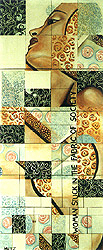

|  |  |  |  |  |
|
 click here to view larger image |
 |
Woman Stuck in the Fabric of Society (drawing converted to) oil paint, 25 canvas boards, fishing line 60 cm x 144 cm 1999 collection Britta Narum and Joost Johan Krikhaar The original drawing was of a woman looking over her shoulder. The decorative pattern throughout the piece is a tribute to Gustav Klimt. I was experimenting with cutting up my own work and making 'new pictures' from the pieces. Hanging up the assembled drawing, it seemed to resemble a woman's face stuck in the squares of a patchwork quilt. |